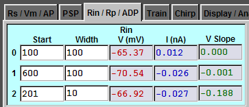
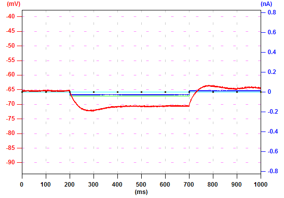
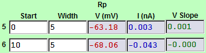
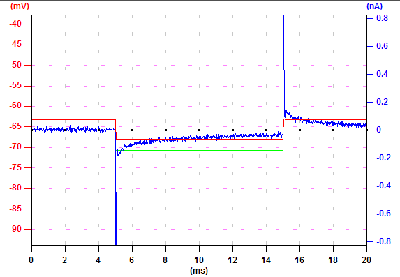
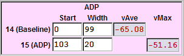
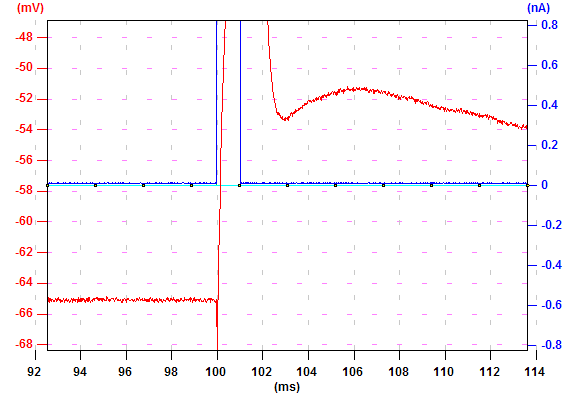

|
In this examle, a 40 pA, 500 ms hyperpolarizaing current pulse is used to
measure Rin. Measurement #0 culculate the average voltage, current, and slope in
the period from 100 to 200 ms. Measure #1 culculate similar characteristics in
the period from 600 to 700 ms. Thus, (V(#1)-V(#0))/(-0.04 nA) is the
steady-state input resistance. Measure #2 can be used to measure the
characteristics in other period. |
 |
 |
|
During establishing whole cell configuration, we monitor the pipette resistance
in the voltage clamp mode. After break in, we can also estimate the input
resistance from this recording protocol. The right is the command protocol to do
this. A 5 mV, 10 ms hyperpolarizing voltage command is used to monitor the
resistance. In this exammple, the patch is just ruptured and the resistance is
estimated to be 106.8 MOhm. |

|
 |
|
To measure ADP, a 1 ms current injection is used to evoke an action potential.
ADP is the difference between vMax(#15) and vAve(#14). |
 |
 |